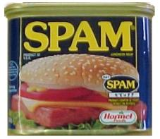

"Spam" est, à l'origine, le nom d'une marque de conserves dont une publicité en radio consistait en la répétition abrutissante du nom de la marque. Cette publicité a été à l'origine d'un sketche des Monty Python dans lequel l'un des protagoniste répète continuellement le mot "Spam", couvrant ainsi les voix des autres acteurs A écouter (>500ko).
Ce terme désigne maintenant le courrier, généralement publicitaire et commercial, non désiré et qui envahit nos boîtes aux lettres électroniques. On parle encore de "pourriel" qui est la contraction de "pourri" et de "courriel".
De toute façon, personne ne lit tous ces trucs. Je me demande bien quel intérêt ont ceux qui envoient toutes ces publicités.
Dire que " personne ne lit ", n'est pas tout à fait vrai. Le coût de l'envoi de dizaines de milliers de courriers publicitaires est très faible. Il suffit que quelques personnes réagissent et passent commande pour le produit pour que la campagne soit bénéficiaire. Et ça fonctionne, puisque les spams se multiplient.
N'empêche, ils doivent pouvoir se payer de gros ordinateurs, pour inonder la planète de courriers électroniques, ces spammeurs.
Ce n'est pas forcément nécessaire. Il leur suffit d'utiliser votre ordinateur (et quelques milliers d'autres).
Dans certains pays, l'envoi de courrier électronique publicitaire est règlementé (Belgique, France, USA,...). L'envoi de spams depuis ces pays pourrait entraîner des poursuites en Justice.
Une solution trouvée par les spammeurs est donc d'utiliser des ordinateurs répartis sur la planète pour envoyer leurs courriers. Il leur suffit de contrôler ces ordinateurs à distance et d'y implanter des serveurs de courrier électronique.
Pour prendre le contrôle d'un ordinateur distant, ils peuvent utiliser des virus ou des vers. Ceux-ci ouvrent des ports des ordinateurs qu'ils infectent. Il ne reste plus aux spammeurs qu'à détecter les ordinateurs qui leur répondent pour en prendre le contrôle.
C'est ainsi que ton ordinateur peut être utilisé par les spammeurs.
Les pirates qui veulent utiliser ton ordinateur à distance doivent donc constamment être à la recherche d'ordinateurs connectés à l'Internet et dont certaines ports sont ouverts. Un ordinateur connecté à l'Internet subit généralement des tentatives d'intrusion après quelques minutes.
Il est donc impératif de toujours vérifier que ton
ordinateur n'a pas été ouvert par un logiciel malveillant.
Le risque est bien de voir ta connexion utilisée pour envoyer du
spam. Ta connexion sera donc ralentie et tu risques de recevoir
des plaintes pour envoi de spam.
Selon l'article 14 § 1er, de la loi du 11 mars 2003, l'envoi de spam est interdit en Belgique.
L'utilisation du courrier électronique à des fins de publicité est interdite, sans le consentement préalable, libre, spécifique et informé du destinataire des messages.
Le texte de cette loi est disponible sur le site web officiel du Ministère de la Justice et commentée en langage accessible aux non-juristes sur le site web du Ministère des Affaires Economiques.
Merci de m'envoyer les références des textes de loi à d'autres pays. Je les ajouterai dans cette leçon.
Pour la France: consulter le site web de la CNIL
Les questions qui suivent et qui sont marquées
sont relatives à la
législation belge. Certaines questions relatives aux termes utilisés ou
a des généralités sur le spamming sont toutefois valables dans tous les
pays.
Les réponses peuvent être trouvées dans cette page ou dans les
informations présentées sur les sites web dont les références sont
fournies.
Quand tu as répondu à toutes les questions et bien compris les réponses, passe à la page suivante.